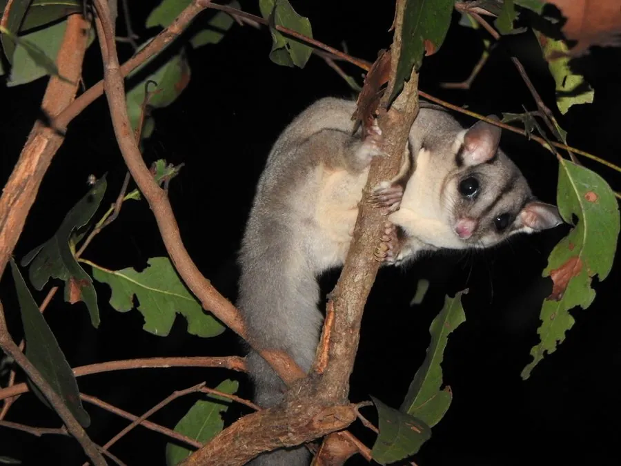

哺乳动物 · 动物界
蜜袋鼯 Petaurus breviceps

澳大利亚和新几内亚的树栖有袋类，体侧有滑翔膜，能从高处滑翔数十米，喜食花蜜和树汁，常被作为宠物饲养。
- 分类
- 门脊索动物门纲哺乳纲目双门齿目科袋鼯科属袋鼯属
- 栖息环境
- 澳大利亚北部和东部、新几内亚的森林与林地
- 地理分布
- 澳大利亚北部和东部、新几内亚及附近岛屿
- 保护级别
- IUCN 无危（LC）；非中国分布物种
物种志
蜜袋鼯体长 12–13 厘米，尾长 15–19 厘米，体重 90–150 克。它的毛色为灰蓝至灰褐色，背部有一条深色纵纹从额头延伸到背部，腹部白色；体侧有从腕部到踝部的滑翔膜，尾巴长而蓬松，用于控制滑翔方向。
蜜袋鼯分布于澳大利亚北部和东部、新几内亚及附近岛屿，栖息在森林和林地中。它夜间活动，以花蜜、树汁、花粉、果实和昆虫为食，常成群在树干上舔食树汁。蜜袋鼯从高处跃下时展开滑翔膜，可滑翔 20–50 米。雌性妊娠期约 15–17 天，幼仔在育儿袋中生活约 2–3 个月，寿命约 9–12 年。蜜袋鼯被列为无危，但因其可爱的外形被大量捕捉作为宠物贸易，野外种群受到一定压力。
形态与习性
- 食性花蜜、树汁、花粉、果实与昆虫
- 体长12–13 cm，尾长 15–19 cm
- 体重90–150 g
- 寿命9–12 年
- 繁殖妊娠约 15–17 天，育儿袋约 2–3 个月
- 滑翔可滑翔 20–50 m
趣味知识
- 蜜袋鼯体侧有滑翔膜，能从高处滑翔 20–50 米。
- 它夜间舔食树汁和花蜜，常成群活动。
- 蜜袋鼯外形可爱，被大量捕捉进入宠物贸易。